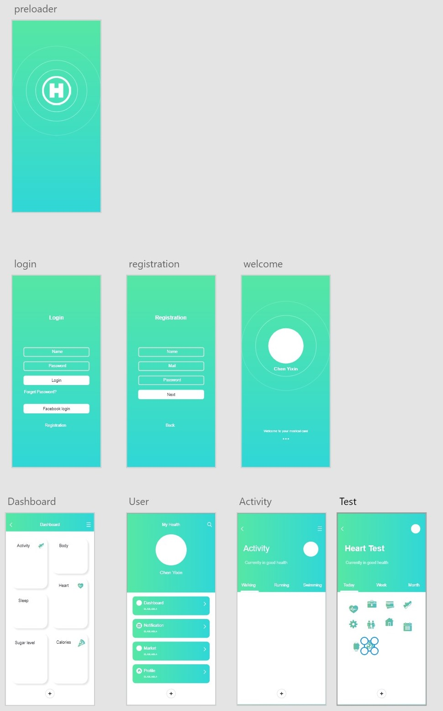
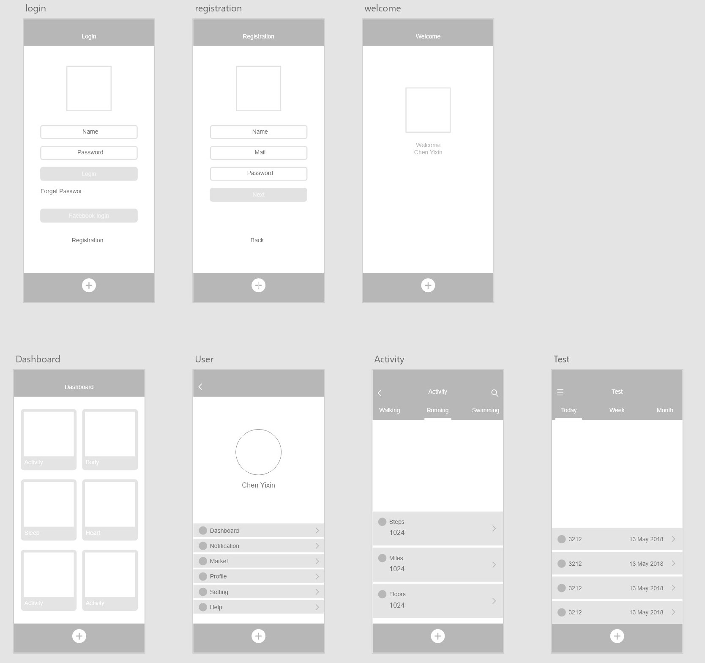
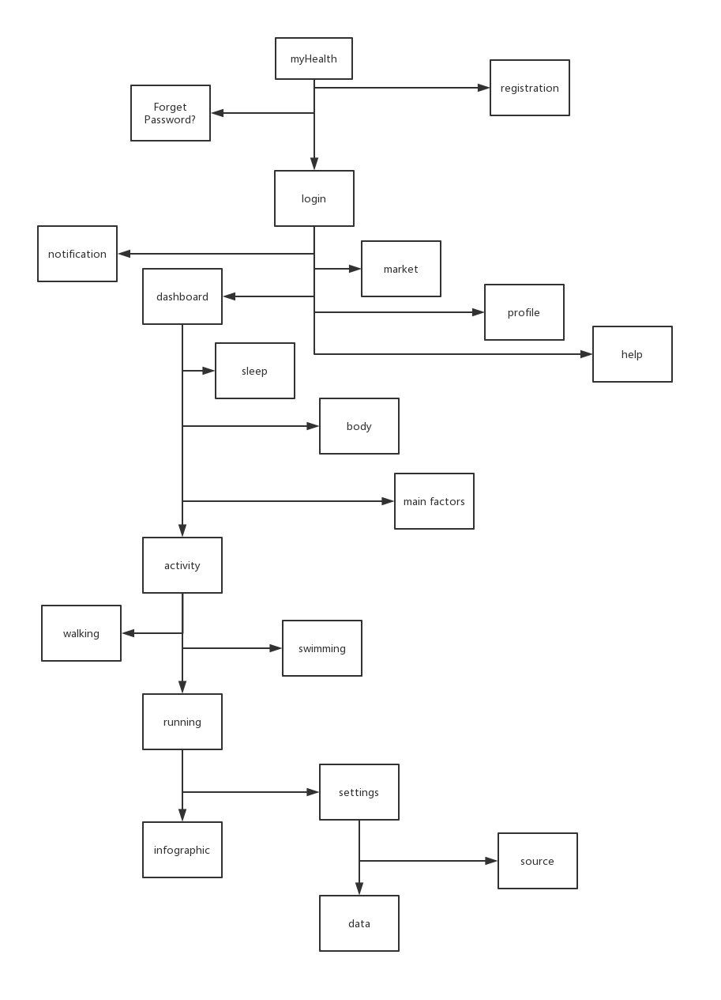
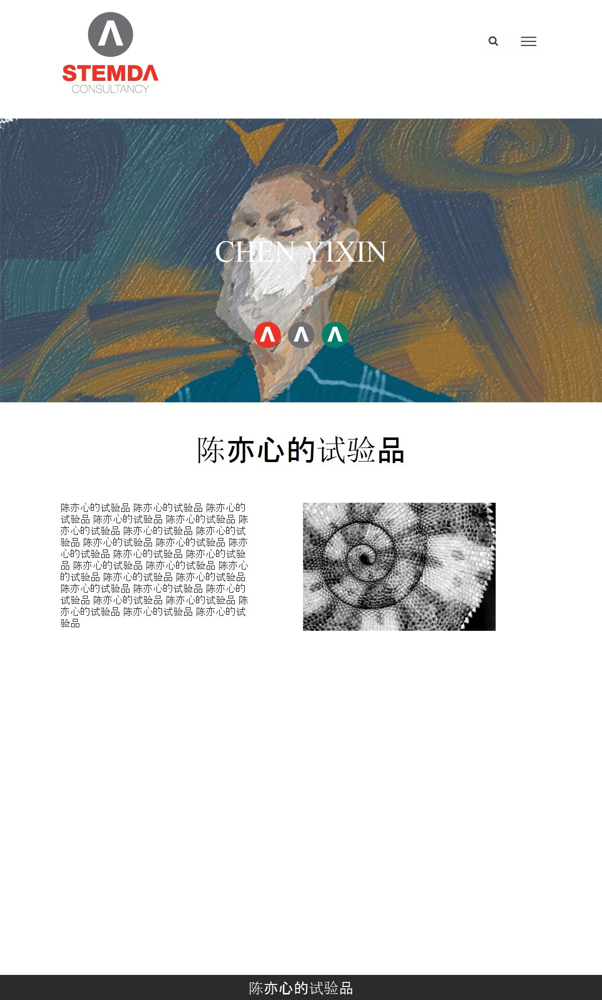

MyHealth UI+交互
简述：一个手机里的医疗卡：综合各种智能硬件的监测数据，分析实时身体状态。
反馈：
在无色模板上加上主题色，元素形状改进；
主题色需要少而精：蓝、绿、白、深灰；
动效和触动按钮有一定联系：比如左箭头对应到达页面从左边滑出
工具：Adobe XD
完成时间：20190421

MyHealth无色模板
简述：一个手机里的医疗卡：综合各种智能硬件的监测数据，分析实时身体状态。
反馈：
除去颜色，每个元素的形状也没有细致处理；
制作模板时更关注元素之间层级、位置的关系；
画板排列时可按层级排列；
工具：Adobe XD
完成时间：20190419

MyHealth信息架构分析
简述：一个手机里的医疗卡：综合各种智能硬件的监测数据，分析实时身体状态。
反馈：
信息架构是界面制作的基础；
在做的时候经常只考虑如何往下进行，而忽略了一些返回需求
工具：ProcessOn
完成时间：20190419

生成网页链接
简述：将本地的网页源文件推到GitHub上，并且能生成所有人都可进入的链接。
反馈：
Git有三种形式：gitBash, gitGUI, gitDesktop
以前比较习惯使用bash和GUI，但是gitDesktop更快捷，而且Webstorm里可以直接推到远程仓库;
貌似这样就不用买域名了，GitHub真是好东西。
工具：Git； Github； webstorm；
完成时间：20190418